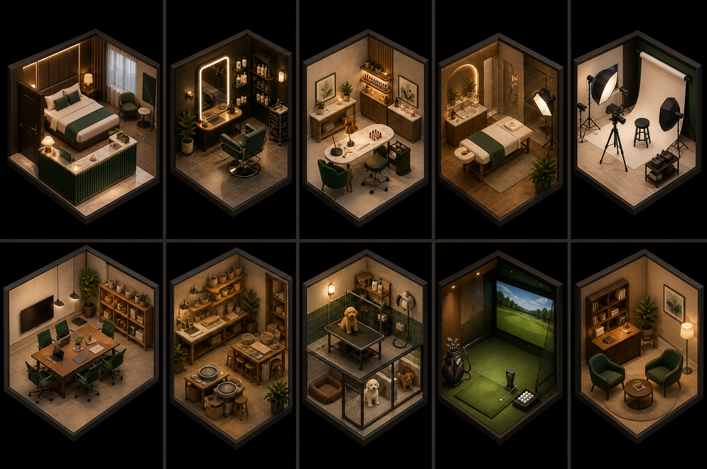

자주 만드는 기본 코드는 미리 준비하고
우리 가게에 필요한 내용만 연결합니다
웹사이트를 만들 때 반복되는 화면과 폴더를 미리 준비해 둡니다.
로그인과 데이터 저장 연결을 쉽게 시작하도록 기본 코드를 제공합니다.
예약 규칙·관리 화면·AI 채팅의 기본 뼈대를 미리 준비했습니다.
매번 처음부터 만들던 공통 부분을 미리 묶어 두고, 가게 이야기를 연결해 빠르게 시작하는 작은 제작 키트입니다.
예약을 받는 가게라면
이런 서비스로 바꿔볼 수 있습니다

손님은 채팅으로 묻고, 가능한 시간을 확인해 바로 예약합니다.
고객은 예약하고,
사장님은 예약을 관리합니다

예약표만 있다고
예약이 저절로 운영되지는 않습니다
고객이 예약 버튼을 누르면, 서비스가 가게 규칙을 확인한 뒤 예약 가능 여부를 알려 줍니다.

정해진 메뉴를 고르는 대신
우리 가게의 운영 방식을 먼저 이야기합니다

서비스를 만든 뒤에
실제로 사용할 수 있도록 연결합니다
가게 답변 정리 → 화면과 기능 만들기 → 오류 확인
만들기 성공
예약 저장 → 사장님 로그인 → 기본 설정 → 직접 사용
운영 준비 확인
[SKIP verify_qa]는 실패가 아니라, 아직 2단계를 시작하지 않았다는 안내입니다.
처음부터 제대로 만들기 위해
네 가지만 지킵니다
기존 완성본을 복사하지 않고 빈 폴더에서 시작합니다.
Claude가 가게 운영 방식을 마음대로 추측하지 않습니다.
내가 내용을 확인하고 “확정”한 뒤에만 만들기 시작합니다.
가게 답변 파일과 만들어진 예약 서비스 폴더를 따로 둡니다.
바탕화면에
아무것도 없는 새 폴더를 만듭니다
인터넷이 필요합니다 · macOS/Linux/WSL2 터미널에서 진행합니다 · Windows PowerShell 단독 실행은 지원하지 않습니다
mkdir -p "$HOME/Desktop/jeomwon-zero-test"
cd "$HOME/Desktop/jeomwon-zero-test"
find . -mindepth 1 -maxdepth 1 -print마지막 명령 뒤에 아무 파일도 표시되지 않습니다.
예약 서비스가 들어갈 폴더는 Claude가 나중에 만듭니다.
터미널에서 함께 일할 AI
Claude Code를 설치합니다
curl -fsSL https://claude.ai/install.sh | bashclaude를 입력해 실행합니다exit로 종료합니다공식 문서: https://code.claude.com/docs/en/setup
프로젝트 실행 도구 Bun과
예약 서비스 재료 Jeomwon을 설치합니다
curl -fsSL https://bun.sh/install | bash -s "bun-v1.3.14"
bun --version # 정확히 1.3.14curl -fsSL https://github.com/NewTurn2017/jeomwon/releases/download/v0.1.4/install.sh \
| bash -s -- --agent allINSTALL PASS jeomwon v0.1.4이 보이면 설치 성공입니다.
빈 폴더에서 Claude를 열고
/jeomwon만 입력합니다
cd "$HOME/Desktop/jeomwon-zero-test"
claude/jeomwonJeomwon이 가게 운영을 차례대로 질문합니다.
답을 확인하고 “확정”하면 예약 서비스 만들기를 시작합니다.
Claude가 차례대로 물어보는
10가지 가게 정보
가게 이름·업종
예약받을 사람·공간
서비스와 걸리는 시간
요일별 영업시간
쉬는 날
취소와 임시 예약
사장님 관리 화면
필요한 기능
알림과 구독
고객에게 보여줄 문구
예약번호 모양 · 서비스마다 걸리는 시간 · 일주일 전체 영업시간 · 만들기 어려운 요구까지 다시 읽어 줍니다.
Claude가 읽어 준 내용이 맞을 때만
“확정”이라고 답합니다
jeomwon-zero-test/
├── domain-pack.json
└── generated/
└── <domainKey>/
domain-pack.json은 가게 답변, generated는 만들어진 예약 서비스입니다.
재료 확인 완료 · PREFLIGHT PASS
실제 연결은 아직 · [SKIP verify_qa]
서비스 만들기 완료 · VERIFY PASS
세 문구를 터미널에서 직접 확인한 뒤 다음 단계로 갑니다.
Convex는 예약 내역을
안전하게 저장하고 전달하는 온라인 공간입니다
수업과 개인 연습은 월 $0 무료 플랜으로 시작할 수 있습니다.
고객의 예약·변경·취소 내역을 한곳에 보관합니다.
예약이 바뀌면 고객 화면과 관리 화면에도 바로 반영됩니다.
- Convex 가입과 팀 만들기는 브라우저에서 직접 합니다.
bun setup명령이 만들어진 예약 서비스와 Convex를 연결해 줍니다.- 무료 플랜에는 사용량 한도가 있으므로 실제 영업 전에는 최신 가격표를 확인합니다.
공식 가격: https://www.convex.dev/pricing · 한도: https://docs.convex.dev/production/state/limits
예약 저장 공간과
사장님 로그인을 연결합니다
만들어진 예약 서비스 폴더에서 아래 명령을 실행하면 브라우저가 열립니다.
bunx convex loginGoogle Cloud에서 프로젝트 → 로그인 동의 화면 → 웹 애플리케이션 순서로 만듭니다.
내 컴퓨터 주소: http://localhost:3000
Google에 넣을 돌아오기 주소는 직접 추측하지 말고, 다음 단계에서 나온 주소를 그대로 복사합니다.
bun setup이
필요한 연결을 차례대로 안내합니다
bun setup --lang ko첫 실행은 단순하게: AI 답변은 연습 모드 · 이메일은 화면에만 기록 · 결제 기능은 끔
자동 확인이 끝나면
고객과 사장님처럼 직접 사용해 봅니다
bunx playwright install chromium
bun run qa
bun dev중복 예약 방지 · 내 예약만 변경 · 알림 기록 등 12가지를 검사합니다.
고객 두 명의 예약 · 사장님 로그인 · 새로고침 뒤 예약 내역을 확인합니다.
이 확인 과정은 연습용 예약 내역을 지울 수 있으므로 실제 영업 중인 서비스에서는 실행하지 않습니다.
Claude Code 대신 Codex를 사용해도
만드는 순서는 같습니다
curl -fsSL https://chatgpt.com/codex/install.sh | sh
cd "$HOME/Desktop/jeomwon-zero-test"
codex오늘 수업에서 함께 사용하는 기본 도구
같은 Jeomwon과 같은 시작 문장을 사용하는 대안 도구
공식 설치: https://github.com/openai/codex/blob/main/README.md
예약 서비스 이용료와
고객이 내는 예약금은 서로 다른 돈입니다

고객 예약과 사장님 관리가 가능한 예약 서비스
고객 예약금 · 카드 결제 · 취소 환불 기능
혼자 다시 만들 때 기억할
열한 단계
오늘과 다른 업종을 골라, 예제 없이 같은 순서로 새 예약 서비스를 만들어 봅니다.
슬라이드와 배포된 안내서만 보고 이 과정을 다시 따라 할 수 있다면 오늘 실습은 성공입니다.